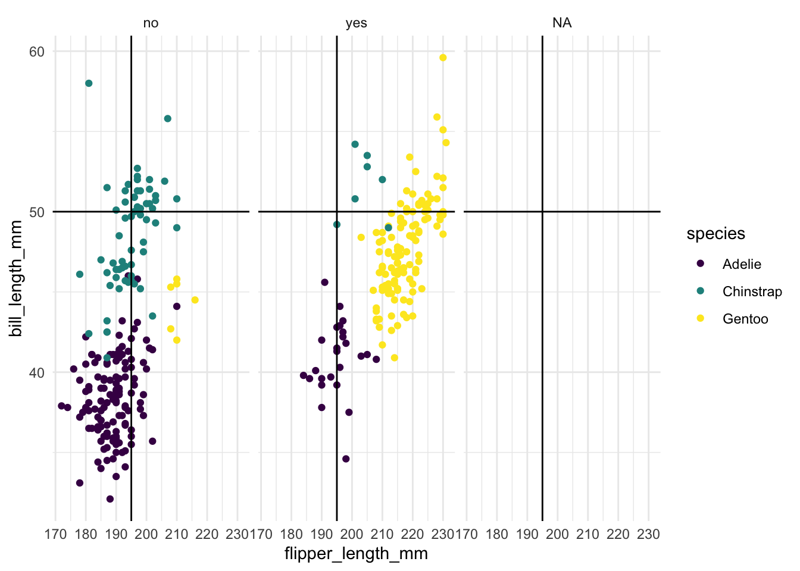
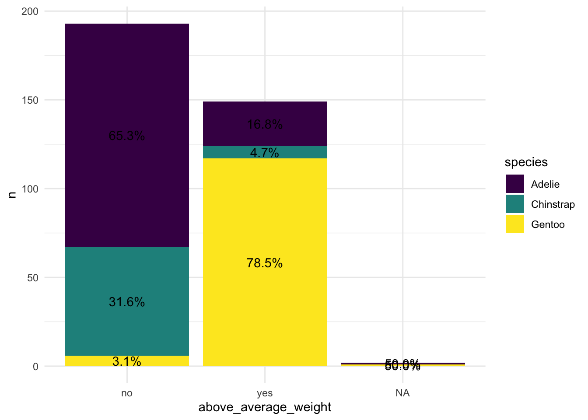

library(tidyverse)
library(bayesrules)
library(janitor)
library(e1071)naive bayes penguins
Libraries
Story
We’ll start our naive Bayes classification with just a single penguin. Suppose an Antarctic researcher comes across a penguin that weighs less than 4200g with a 195mm-long flipper and 50mm-long bill. Our goal is to help this researcher identify the species of this penguin, Adelie, Chinstrap, or Gentoo.
Let’s Plot
data(penguins_bayes)
penguins <- penguins_bayespenguins <- penguins %>%
mutate(above_average_weight = if_else(above_average_weight == 1, "yes", "no"))ggplot(penguins, aes(x = flipper_length_mm, y = bill_length_mm, color = species)) +
geom_point() +
facet_wrap(~ above_average_weight) +
theme_minimal() +
scale_color_viridis_d() +
geom_hline(yintercept = 50) +
geom_vline(xintercept = 195)Warning: Removed 2 rows containing missing values or values outside the scale range
(`geom_point()`).
Our Bayes Theorem approach if we only consider weight
P(B|A)
P(Chinstrap | under average weight)
penguins_weight_bayes <- penguins %>%
tabyl(above_average_weight, species) %>%
adorn_percentages("col")
penguins_weight_bayes_long <- penguins_weight_bayes %>%
pivot_longer(cols = -above_average_weight, names_to = "species", values_to = "percentage")penguins1 <- penguins %>%
group_by(above_average_weight, species) %>%
count()
penguins2 <- penguins1 %>%
group_by(above_average_weight) %>%
mutate(percent = n / sum(n))ggplot(penguins2, aes(x = above_average_weight, y = n, fill = species)) +
geom_bar(stat = "identity") +
geom_text(aes(label = scales::percent(percent)),
position = position_stack(vjust = 0.5)) +
scale_fill_viridis_d() +
theme_minimal()
How can we consider the other two variables from the story?
Naive Bayes!
naive_model_bill_flipper_avg_weight <- naiveBayes(species ~ bill_length_mm + flipper_length_mm + above_average_weight,
data = penguins)our_penguin <- data.frame(bill_length_mm = 50, flipper_length_mm = 195, above_average_weight = "no")predict(naive_model_bill_flipper_avg_weight, newdata = our_penguin, type = "raw") Adelie Chinstrap Gentoo
[1,] 0.0003219805 0.9994165 0.0002615187penguins <- penguins %>%
mutate(predicted_class= predict(naive_model_bill_flipper_avg_weight, newdata = .))penguins %>%
tabyl(species, predicted_class) %>%
adorn_percentages("row") %>%
adorn_pct_formatting(digits = 2) %>%
adorn_ns species Adelie Chinstrap Gentoo
Adelie 96.05% (146) 2.63% (4) 1.32% (2)
Chinstrap 7.35% (5) 86.76% (59) 5.88% (4)
Gentoo 0.81% (1) 4.03% (5) 95.16% (118)naive_model_bill_flipper_avg_weight
Naive Bayes Classifier for Discrete Predictors
Call:
naiveBayes.default(x = X, y = Y, laplace = laplace)
A-priori probabilities:
Y
Adelie Chinstrap Gentoo
0.4418605 0.1976744 0.3604651
Conditional probabilities:
bill_length_mm
Y [,1] [,2]
Adelie 38.79139 2.663405
Chinstrap 48.83382 3.339256
Gentoo 47.50488 3.081857
flipper_length_mm
Y [,1] [,2]
Adelie 189.9536 6.539457
Chinstrap 195.8235 7.131894
Gentoo 217.1870 6.484976
above_average_weight
Y no yes
Adelie 0.83443709 0.16556291
Chinstrap 0.89705882 0.10294118
Gentoo 0.04878049 0.95121951flipper length
dnorm(195, mean = 195.8235, sd = 7.131894)[1] 0.05556611bill_length
dnorm(50, mean = 48.83382, sd = 3.339256)[1] 0.1124026above_average_weight
- P(species|under_average_weight)
penguins %>%
tabyl(above_average_weight, species) %>%
adorn_percentages("col") above_average_weight Adelie Chinstrap Gentoo
no 0.828947368 0.8970588 0.048387097
yes 0.164473684 0.1029412 0.943548387
<NA> 0.006578947 0.0000000 0.0080645160.8970588[1] 0.8970588penguins %>%
tabyl(species) species n percent
Adelie 152 0.4418605
Chinstrap 68 0.1976744
Gentoo 124 0.36046510.1976744[1] 0.19767440.1976744 * 0.001241 * 0.05556611 [1] 1.363114e-05All Data
naive_model_3 <- naiveBayes(species ~ .,
data = penguins)penguins <- penguins %>%
mutate(predicted_class_all_data = predict(naive_model_3, newdata = .))penguins %>%
tabyl(species, predicted_class_all_data) %>%
adorn_percentages("row") %>%
adorn_pct_formatting(digits = 2) %>%
adorn_ns species Adelie Chinstrap Gentoo
Adelie 97.37% (148) 2.63% (4) 0.00% (0)
Chinstrap 7.35% (5) 92.65% (63) 0.00% (0)
Gentoo 0.81% (1) 0.00% (0) 99.19% (123)naive_model_3
Naive Bayes Classifier for Discrete Predictors
Call:
naiveBayes.default(x = X, y = Y, laplace = laplace)
A-priori probabilities:
Y
Adelie Chinstrap Gentoo
0.4418605 0.1976744 0.3604651
Conditional probabilities:
island
Y Biscoe Dream Torgersen
Adelie 0.2894737 0.3684211 0.3421053
Chinstrap 0.0000000 1.0000000 0.0000000
Gentoo 1.0000000 0.0000000 0.0000000
year
Y [,1] [,2]
Adelie 2008.013 0.8217800
Chinstrap 2007.971 0.8633601
Gentoo 2008.081 0.7922057
bill_length_mm
Y [,1] [,2]
Adelie 38.79139 2.663405
Chinstrap 48.83382 3.339256
Gentoo 47.50488 3.081857
bill_depth_mm
Y [,1] [,2]
Adelie 18.34636 1.2166498
Chinstrap 18.42059 1.1353951
Gentoo 14.98211 0.9812198
flipper_length_mm
Y [,1] [,2]
Adelie 189.9536 6.539457
Chinstrap 195.8235 7.131894
Gentoo 217.1870 6.484976
body_mass_g
Y [,1] [,2]
Adelie 3700.662 458.5661
Chinstrap 3733.088 384.3351
Gentoo 5076.016 504.1162
above_average_weight
Y no yes
Adelie 0.83443709 0.16556291
Chinstrap 0.89705882 0.10294118
Gentoo 0.04878049 0.95121951
sex
Y female male
Adelie 0.500000 0.500000
Chinstrap 0.500000 0.500000
Gentoo 0.487395 0.512605
predicted_class
Y Adelie Chinstrap Gentoo
Adelie 0.960526316 0.026315789 0.013157895
Chinstrap 0.073529412 0.867647059 0.058823529
Gentoo 0.008064516 0.040322581 0.951612903